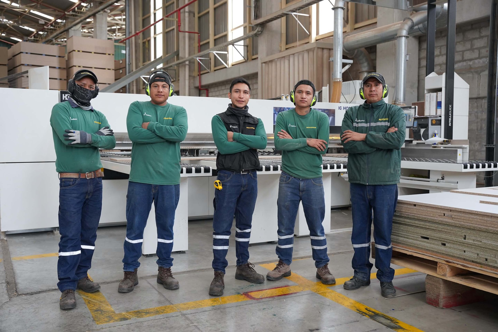

Sobre Wiru Service Somos una Empresa Peruana, con sede en la ciudad de Arequipa, especializada en brindar servicios de mantenimiento en equipos de operaciones en mina y planta concentradora, fabricación de estructuras metálicas y recuperación de componentes en aceros especiales para la industria en general.
Nuestros Servicios Ofrecemos soluciones integrales en metalmecánica Diseño y cálculo estructural. Fabricación de estructuras metálicas. Techos y cubiertas metálicas. Escaleras y pasarelas industriales. Carpintería metálica. Montaje e instalación. Trabajos en mina. Mantenimiento y reparación. Sistemas de soporte de rocas. Fabricación de componentes metálicos para la mina. Sistema de ventilación. Tuberías y ductos. Instalación de cimbras y otros.
Proyectos Recientes Algunos de nuestros trabajos destacados Proyecto Cliente Ubicación Año Estructura para bodega industrial Agroindustrial del Sur Cerro Colorado 2025 Cubierta metálica para centro comercial Mall Arequipa Yanahuara 2024 Pasarelas para planta de tratamiento SEDAPAR La Tomilla 2024 Conoce a Nuestro Equipo  Síguenos también en: